地政学
桂林は広西チワン族自治区北東部にあり、漓江流域、珠江水系、湖南・貴州方面を結ぶ内陸の観光結節点です。国境都市ではありませんが、華南山地文化、少数民族地域、広域鉄道移動の入口になります。山地と川が軸です。

🇨🇳 中国 / アジア / World City Atlas
漓江の水面、石灰岩の奇峰、洞窟、陽朔への旅路が、中国の山水イメージと観光経済を結びます。景勝地である前に、川、農地、少数民族の山地、労働、洪水、都市更新が折り重なる生活都市です。
都市の骨格
桂林では、観光ポスターの奇峰と川辺の生活が同じ場所にあります。漓江を下る船、朝の米粉店、郊外の畑、雨季の水位、陽朔へ向かう交通が、景勝都市の現実を形作ります。
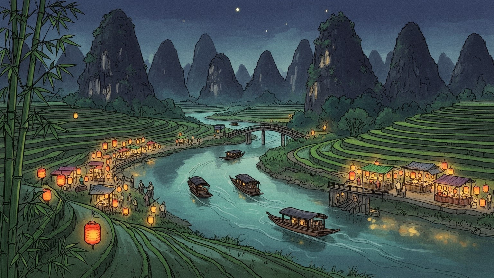
桂林は広西チワン族自治区北東部にあり、漓江流域、珠江水系、湖南・貴州方面を結ぶ内陸の観光結節点です。国境都市ではありませんが、華南山地文化、少数民族地域、広域鉄道移動の入口になります。山地と川が軸です。
観光は桂林の主軸で、船、宿泊、飲食、ガイド、交通、小売が雇用を作ります。周辺では米、柑橘、茶、漢方素材、石材、食品加工、軽工業も、暮らしと郊外所得を支える基盤です。季節差も大きい仕事です。山も近いです。
水墨画のようなカルスト景観は中国の山水想像と結びつき、少数民族文化、仏教や道教の寺院、祖先祭祀、市場食、米粉の朝食が日常に重なります。景勝地だけでは都市の厚みを捉えきれません。祈りも残ります。街にも。
漓江、象鼻山、七星公園、蘆笛岩、陽朔は観光の入口です。一方で住民には観光価格、季節雇用、洪水、交通混雑、旧市街更新、若者流出が身近な課題として残ります。旅と生活は同じ道を使います。雨季も大事です。
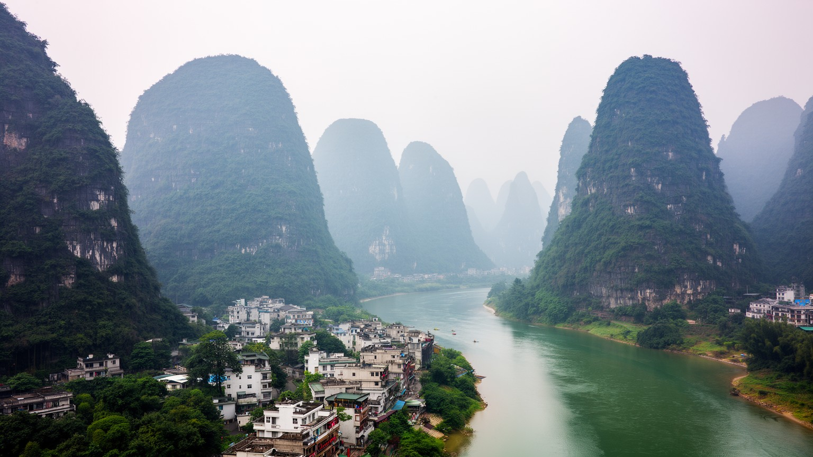
桂林の第一の特徴は、石灰岩が長い時間をかけて溶け、削られ、塔のような峰、洞窟、地下水、急な斜面を生んだカルスト地形です。街のすぐ近くに奇峰が立つため、自然は郊外の遠景ではなく、道路、住宅、学校、市場、川辺の散歩道の背景として毎日現れます。平地は限られ、川沿いと盆地状の土地に市街地が集まり、少し外へ出ると畑、丘、洞窟、村が交互に続きます。この地形は観光の魅力を作る一方で、建設できる場所、水はけ、道路の通し方、景観規制、土砂災害の不安にも関わります。山を切り開きすぎれば景観の価値を失い、保護を厳しくすれば住宅や事業の自由度が下がります。桂林を見るとは、山が美しいという感想で止まらず、峰の間で土地をどう使い、誰が景観から利益を得て、誰が制約を引き受けるのかを読むことです。雨の後には霧が峰を包み、観光客には詩的な風景になりますが、住民にとっては湿気、滑りやすい道、排水、農作業の調整でもあります。地形の美しさと不便さは分けられません。桂林の都市性は、この硬い石灰岩の輪郭に沿って暮らしを組み立ててきた点にあります。洞窟の入口、橋の位置、畑の段差、住宅の向きまで、地形は細かな判断を促します。山を背景として眺めるだけでなく、山の間をどう通り抜けるかが日常の知恵になります。峰は道案内にもなります。要所です。
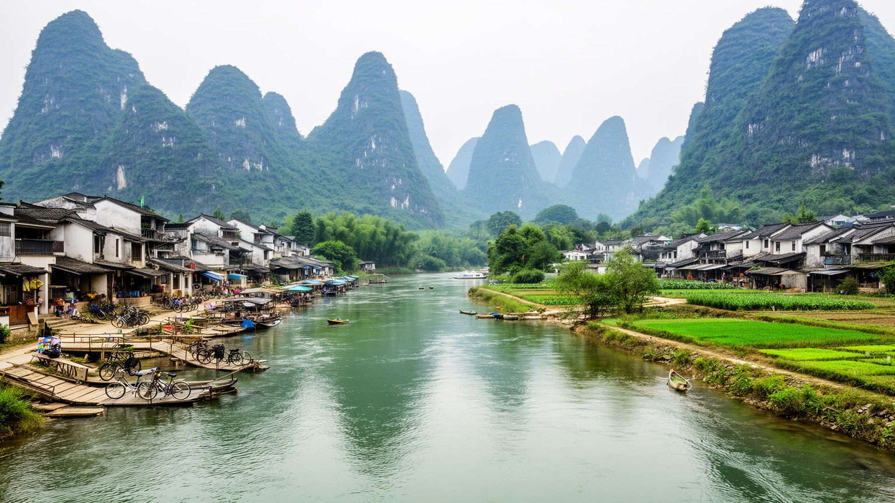
漓江は桂林を景勝都市にした中心軸です。市街地の水辺を抜け、カルストの峰の間を流れ、陽朔方面へ続く川の回廊は、船下り、写真、詩、映画、絵画、旅の記憶を束ねてきました。しかし川は観光用の舞台だけではありません。取水、排水、農地、漁、橋、遊歩道、洪水対策、村の移動、船着き場の仕事が重なります。観光客はゆっくりした船旅として川を経験しますが、地元の人にとっては水位、雨、交通、清掃、漁業規制、岸辺の商売が暮らしに直結します。上流や支流の開発、水質、砂利採取、岸の舗装は、川の透明度や景観を変える要因になります。川辺を整備すれば歩きやすくなり、ホテルや飲食店も増えますが、古い渡し場や小さな市場の余地が狭まることもあります。桂林の漓江を読むには、観光船の視点と、橋を渡り、川の増水を気にし、朝夕に岸辺を使う住民の視点を重ねる必要があります。陽朔へ向かう風景は桂林市域の外側まで観光圏を伸ばし、街の名前を広域の山水イメージに変えました。そのため桂林の都市経済は、中心市街だけではなく、川沿いの村、宿、道路、畑、船の運航と一体です。船の便数、雨季の水位、岸辺の清掃、橋の渋滞は、観光の満足度と住民の暮らしを同時に左右します。川は美しい線である前に、地域全体の仕事をつなぐ動脈です。水辺の記憶も続きます。生活線です。
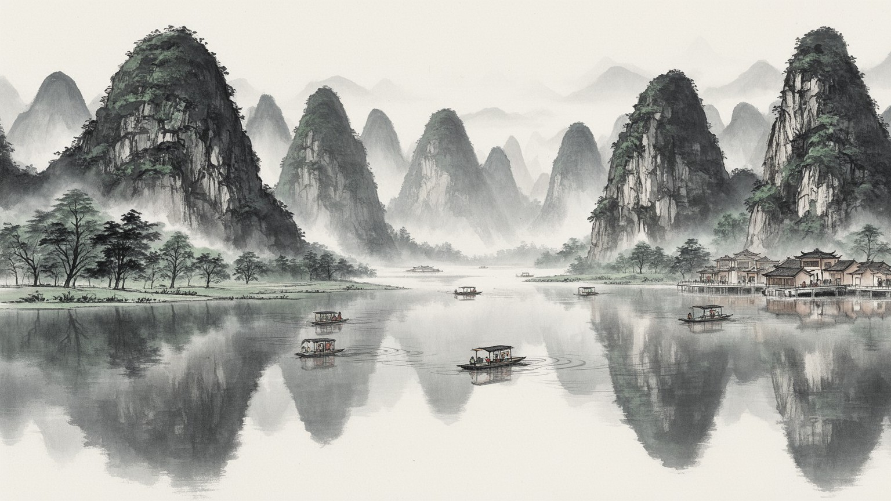
桂林はしばしば、中国的な山水の理想像として語られます。水面に峰が映り、小舟が進み、霧が斜面を包む構図は、古い詩画の世界と現代の旅行写真をつなぎます。この強いイメージは都市の大きな資産ですが、同時に桂林を一枚の絵に閉じ込める危うさもあります。実際の街には、集合住宅、学校、病院、駅、バスターミナル、スーパー、工場、夜市、工事現場があり、山水の静けさだけでは説明できません。観光の宣伝は人の少ない風景を好みますが、景観を支えるのは清掃、船の整備、交通整理、食材の配送、宿の洗濯、売店の仕入れ、ガイドの語りです。山水画のような風景を楽しむほど、その裏側の労働や管理も見えてきます。桂林の魅力は、自然が都市から切り離されていることではなく、自然イメージが都市の日常の中で何度も使い直される点にあります。写真を撮る場所、散歩する川辺、朝食を食べる路地、雨宿りする軒先が同じ地図にあるため、観光客の美意識と住民の生活感が交差します。桂林を読むには、詩的な風景を否定せず、その風景が誰の仕事で保たれ、誰の暮らしを変えているのかまで見ることが重要です。山水のイメージは教育、土産物、都市ロゴ、ホテルの内装にも入り込み、住民自身の郷土意識を形作ります。だからこそ、絵になる場所だけでなく絵から外れる場所も都市の一部として扱う必要があります。
桂林観光は中心市街だけで完結しません。漓江を下った陽朔、月亮山の周辺、川沿いの村、棚田や山地の町が、ひとつの広い滞在圏を作っています。旅行者は桂林駅や空港に入り、市内で一泊し、船やバスで陽朔へ向かい、自転車、筏、洞窟、夜の舞台、カフェ、民宿を組み合わせます。この流れは周辺の村に収入をもたらし、農家の家を宿に変え、道路沿いに飲食店やレンタル店を増やしました。一方で、観光に近い村と遠い村の差、土地利用の変化、家賃や物価の上昇、交通量、静かな生活への影響も生まれます。陽朔の国際的な知名度は桂林ブランドを強めますが、中心市街のホテルや商店にとっては滞在時間を奪う競争相手にもなります。桂林を都市として考えるには、行政境界よりも、観光客と労働者、食材、バス、船、予約サイトが動く実際の範囲を見る必要があります。観光圏が広がるほど、景観保全、交通、廃棄物、水質、農地の維持は複数の町村にまたがる課題になります。桂林の名前は一つでも、訪問者が経験する都市は川に沿って伸びる地域全体です。日帰り客が増えれば中心部の消費は薄くなり、長期滞在が増えれば住宅や静かな村道への負担が強まります。観光圏の設計は、どこに泊まり、どこで食べ、どの道を通るかを調整する地域政策でもあります。村の負担も設計対象です。調整も重要です。
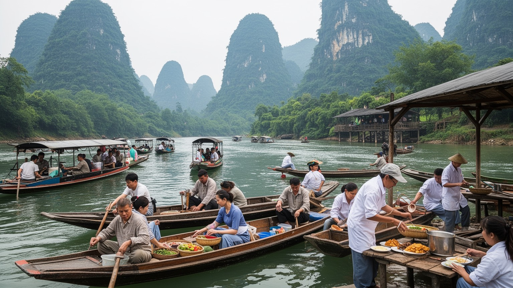
桂林の観光産業は、船頭やガイドだけでなく、ホテル清掃、厨房、土産物店、写真サービス、バス運転、駅前の案内、農村民宿、舞台公演、夜市、ネット予約の管理まで広い仕事を含みます。繁忙期には人手が必要になり、雨や景気、感染症、交通規制、旅行サイトの評価に左右されやすい仕事も多くなります。観光都市は華やかに見えますが、収入は季節で揺れ、長時間労働や低い単価、クレーム対応、価格競争の負担もあります。若者にとって観光は地元に残る選択肢を作る一方、安定した専門職を求めて南寧、広州、深圳へ出る動きも続きます。農村部では家族経営の宿や飲食店が増え、農作業と観光サービスを組み合わせる家庭もあります。これは収入源の多様化であると同時に、家族全員が休みにくい働き方でもあります。桂林の産業を読むには、GDPや訪問者数だけではなく、風景を商品に変える細かな労働の連鎖を見なければなりません。美しい眺望の背後には、川を清掃し、部屋を整え、客を案内し、食材を運び、SNS上の評判に気を配る人々がいます。観光の質は、働く人の暮らしがどれだけ持続できるかにも左右されます。料金が下がれば旅行者には得に見えても、現場では人件費や安全確認の余裕が削られます。景勝地の持続性は、働く人が誇りを持って続けられる条件と結びついています。鍵です。
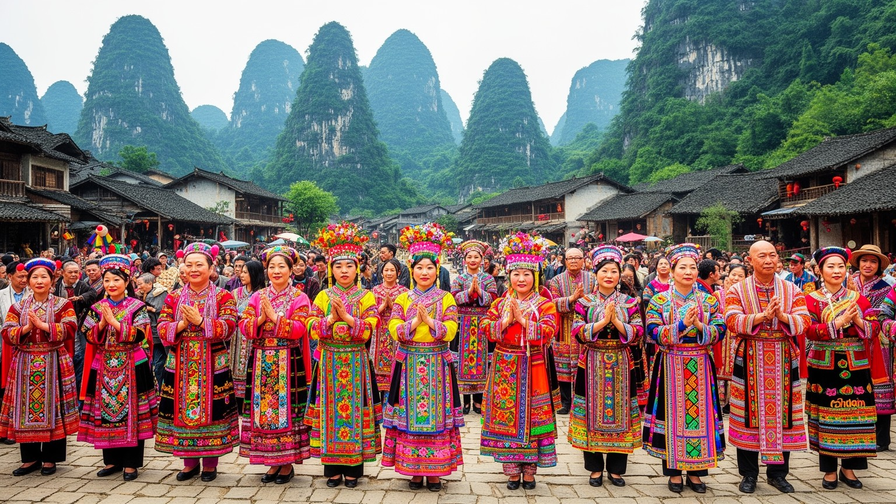
桂林の周辺山地には、チワン族、ヤオ族、ミャオ族、トン族など多様な民族文化が重なります。行政上の桂林市は広く、中心市街の景勝地だけでなく、棚田、山村、市場、祭礼、刺繍、歌、婚礼、建築、食の地域差を含んでいます。観光では民族衣装や舞台化された祭りが目立ちますが、文化は見せ物としてだけ存在しているわけではありません。農作業の暦、祖先祭祀、村の互助、山道の移動、学校教育、出稼ぎ、観光収入への期待が、日常の中で複雑に絡みます。観光が入ると、伝統を残す力になる場合もあれば、外から見て分かりやすい要素だけが強調される場合もあります。若い世代はスマートフォンや都市の仕事を通じて新しい生活様式を取り入れつつ、祭りや言語、食、親族関係を選び直します。桂林を文化都市として読むには、中心部の山水景観だけでなく、周辺山地の人々がどのように観光と距離を取り、何を守り、何を変えているのかを見る必要があります。少数民族文化は都市の飾りではなく、桂林という広域都市の生活基盤の一部です。市場で売られる布、山の茶、祭りの歌は、観光向けの商品である前に地域の記憶です。移動と商業化の中で、その記憶を誰が語るのかが問われます。観光に見えない親族の行き来や学校選びも、文化の継承を左右します。山の暮らしは中心部の消費ともつながります。
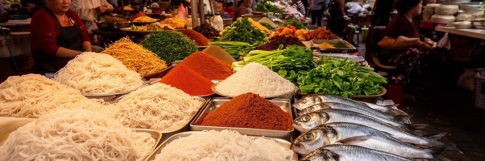
桂林の日常を知る入口のひとつが米粉です。朝の店では、茹でた米粉に肉、揚げ大豆、酸味のある野菜、香味、たれを合わせ、手早く食べて仕事や学校へ向かう人が多く見られます。米粉は観光客向けの名物でもありますが、住民にとっては安く、早く、腹持ちのよい日常食です。市場には川魚、野菜、米、果物、香辛料、乾物、茶、地元の漬物が並び、観光地のメニューとは違う生活の味を作ります。夜には屋台や小さな飲食店が増え、観光客と住民の動線が重なる場所もあります。食は地域の農業とつながり、米の産地、漓江流域の水、山地の作物、物流、家族経営の店が都市の胃袋を支えます。観光が強い街では、値段や味が旅行者向けに変わる通りと、地元の常連が通う通りが分かれることもあります。桂林の食文化を読むには、豪華な料理よりも、朝の米粉店で人が入れ替わる速さ、市場で交わされる会話、雨の日にも開く小さな店を見ることが大切です。米粉の一杯は、景勝地の都市にも普通の朝があることを教えてくれます。食の安定は観光の印象だけでなく、住民の生活費と地域農業の持続にも関わります。米粉店の回転の速さは、通勤、学校、観光出発の時間を反映します。安い朝食があることは、観光都市で働く人の生活を支える小さなインフラでもあります。朝の味は都市の体温です。毎朝続きます。
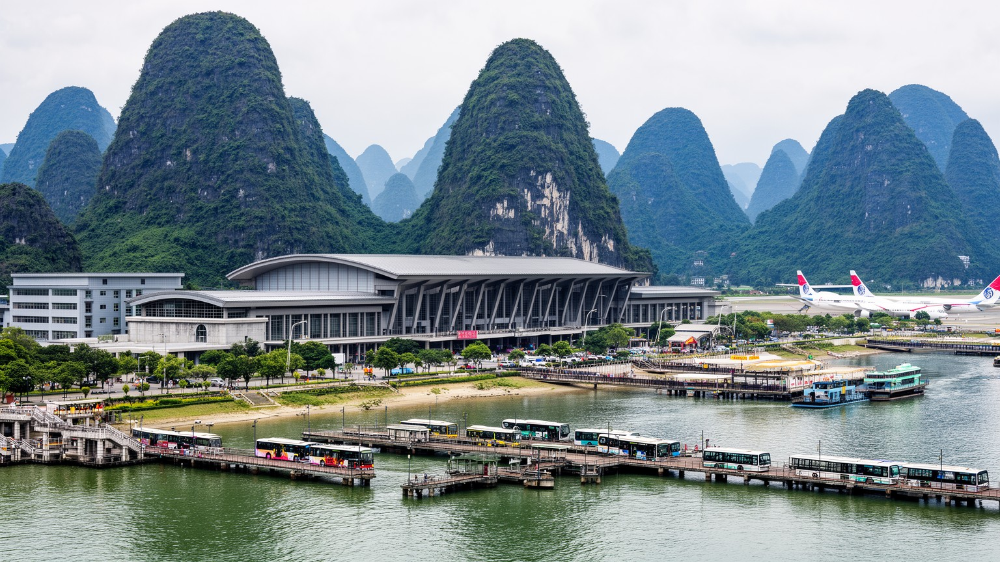
桂林は中国南部の大都市ではありませんが、観光地として全国から人を受け入れるため、交通の結節機能が大きな意味を持ちます。高速鉄道は広州、深圳、南寧、貴陽、長沙方面との距離感を縮め、空港は遠方からの団体旅行や個人旅行を受け入れます。駅、空港、バスターミナル、船着き場、観光バス、配車サービスが連動することで、訪問者は市街、陽朔、棚田、洞窟、川下りを組み合わせられます。一方で、交通の集中は渋滞、駐車、騒音、旧市街の歩きにくさ、ピーク時の価格上昇を生みます。観光客の動線が便利になるほど、住民の通勤や買い物の道が混み、生活道路が観光輸送に使われることもあります。鉄道駅前の開発は宿泊や商業を増やしますが、古い商店街や市場との関係も変えます。桂林を読むには、山水の静かなイメージと、実際には多くの人と荷物が高速で出入りする交通都市としての姿を重ねる必要があります。内陸の観光地は、飛行機や鉄道の時刻表に強く左右され、災害や景気変動で客足が落ちると広い範囲の仕事に影響します。交通は観光を支える装置であると同時に、都市生活の負担を調整する課題でもあります。乗り換えのしやすさ、案内の分かりやすさ、駅前の歩道、バスの待ち時間は、旅の満足度だけでなく住民の日常にも直結します。便利さの裏に調整があります。設計も要ります。
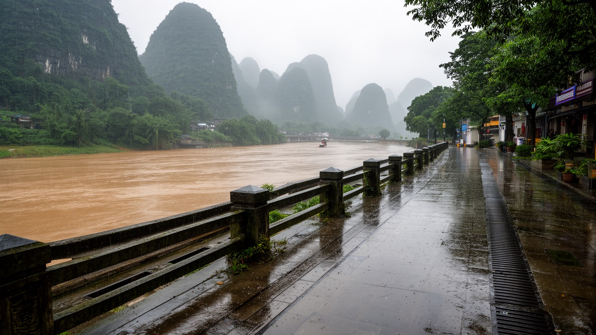
桂林の風景は水によって美しく見えますが、水は同時に都市のリスクでもあります。湿潤な亜熱帯気候のもとで雨季には河川の水位が上がり、低い道路、川沿いの店、遊歩道、農地、観光施設に影響が出ます。排水が追いつかなければ、観光地の印象だけでなく、住民の通勤、学校、仕入れ、衛生にも問題が広がります。水質の保全も重要です。漓江が濁ったり、岸辺のごみが増えたりすれば、観光価値はすぐに下がりますが、それ以前に地域の生活環境が悪化します。観光客が増えるほど、宿泊施設、飲食、交通、廃棄物、トイレ、船の燃料、岸辺の開発を管理する必要があります。景観を守る政策は都市のブランドを支えますが、規制の負担が小規模な商店や村に偏らないかも見なければなりません。桂林の環境問題は、自然を守る抽象論ではなく、誰が水辺を掃除し、誰が開発を抑え、誰が洪水時に店を閉め、誰が保護された景観から収入を得るのかという具体的な問題です。美しい山水を未来に残すには、写真に写る場所だけでなく、排水管、農地、支流、裏通り、観光労働者の生活まで含めた管理が必要になります。雨が強まる時期には、観光ルートの安全確認と住民の避難情報が同じ水位に左右されます。環境保全は旅の品質管理である前に、都市の安全保障です。水位の記録も共有財産です。備えも要ります。
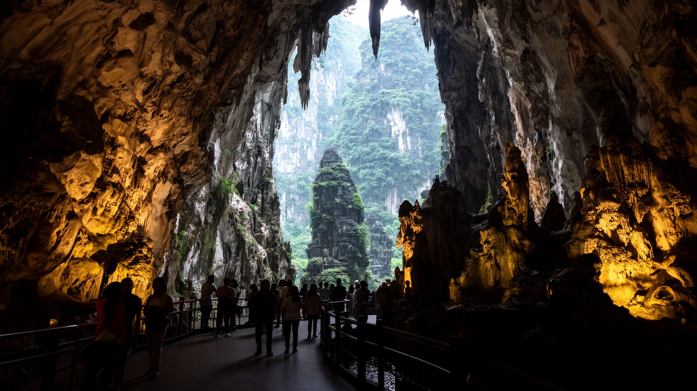
桂林には、蘆笛岩のような洞窟、七星公園、象鼻山、独秀峰、古い街路、寺院、碑刻など、地上と地下の両方に観光資源があります。洞窟はカルストの長い時間を体感できる場所であり、鍾乳石や地下空間は山水の表面とは別の桂林を見せます。観光化された洞窟では照明や通路が整えられ、訪問しやすくなる一方、湿度、接触、照明、混雑が地質や生態に与える影響も考える必要があります。歴史的な名所は、古代から現代まで多くの人が桂林の風景を見て、名付け、詩にし、旅の記憶として残してきたことを示します。ただし、遺産は有名な名所だけではありません。旧市街の小さな店、川辺の渡し場、朝市、学校の裏手に見える峰も、住民の記憶の中では都市の遺産です。観光地として整えられた場所と、日常の中に残る場所を分けすぎると、桂林の厚みは見えにくくなります。洞窟や公園を訪れる視線に、そこで働く人、近所で暮らす人、維持管理を担う人の視点を加えると、桂林の遺産は単なる名所一覧ではなく、地形、歴史、労働、生活が重なった都市の記憶として見えてきます。照明で美しく見える地下空間も、入口の売店、清掃、湿度管理、避難導線がなければ成り立ちません。遺産の価値は、見せ方と守り方の両方で決まります。地下の保全は地上の観光計画とも連動します。日々の管理も欠かせません。
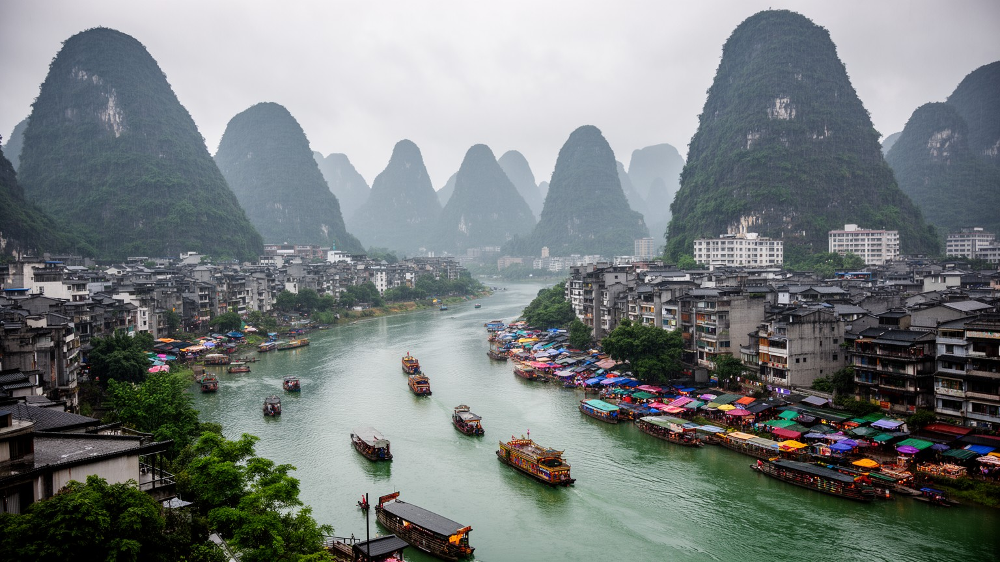
桂林は、世界的に分かりやすい景勝地であるために、かえって都市としての複雑さが見えにくくなる場所です。漓江と奇峰は確かに圧倒的な魅力を持ち、中国の山水イメージを代表する風景として長く語られてきました。しかし、その風景の内側には、観光に依存する働き方、雨季の洪水、川の水質、広域交通、少数民族の山地文化、米粉の朝食、市場、若者の移動、旧市街の更新があります。観光客は短い滞在で美しい構図を探しますが、住民は同じ景観の中で家賃を払い、仕事を探し、子どもを学校へ送り、雨の水位を気にします。桂林を読む鍵は、自然と都市、観光と生活、中心市街と陽朔や山村、伝統と商業化を対立させすぎず、それらが互いに依存していることを見る点にあります。景観を守ることは観光収入を守るだけでなく、住民の水、空気、土地、記憶を守ることでもあります。逆に、生活を軽視した保護は長続きしません。桂林は一枚の山水画ではなく、川に沿って広がる人の移動と仕事の都市です。その多層性を見れば、奇峰の美しさはより深く、同時により現実的なものとして立ち上がります。旅人が感動する静かな水面は、地域の労働、規制、清掃、交通、農地によって支えられています。桂林の未来は、風景を消費する速度と、暮らしを保つ速度をどう釣り合わせるかにかかっています。見る順番も大切です。